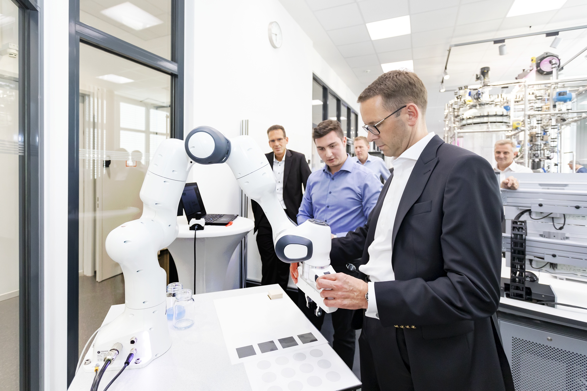

Industrial AutomationRoboticsOT SecurityPCS 7COMOS
Duales Studium · Praxisprojekte
Praktika bei Wacker
Rückblick auf die Praxisphasen des Dualen Bachelorstudiums mit Fokus auf Laborautomation, Systemhärtung und OT-Netzwerke.
In meinen Praxisphasen bei Wacker Chemie arbeitete ich an kooperativen Servicerobotern, Rechnerhärtung, Massendatentransfer zwischen Planungsdatenbank und Leitsystem sowie Netzwerküberwachung industrieller Chemieanlagen.
- Kontext
- Duales Studium mit direktem Bezug zu industriellen Automatisierungssystemen.
- Beitrag
- Analyse von Schnittstellen, Automation, Robotik, Softwareentwicklung, technische Dokumentation und Präsentation von Ergebnissen bei der Eröffnung des Digitalisierungslabors.
- Schwerpunkte
- Automation · PCS 7 · COMOS · OT-Netzwerke · Windows Registry · System Hardening
- Lerneffekt
- Praxisnahe Automatisierung entsteht nicht nur durch technische Umsetzung, sondern durch sichere Schnittstellen, saubere Dokumentation und ein Verständnis für den späteren Betrieb.